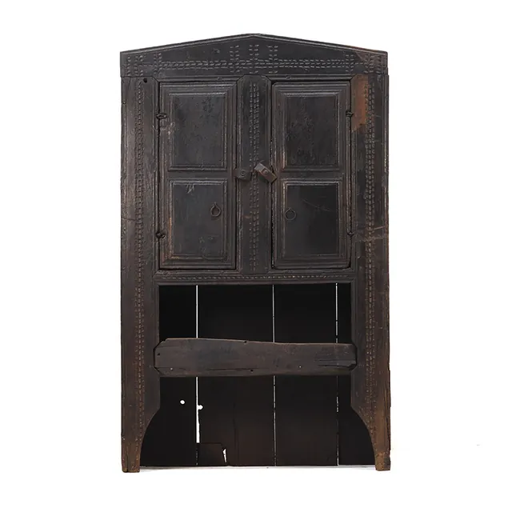

Antiek Spaans cabinet
Spanje, eind 17e eeuw€ 3.150Meer infoDit uitzonderlijke Spaanse cabinet dateert uit het einde van de 17e eeuw en heeft een indrukwekkende, historische uitstraling. Het meubel is vervaardigd uit massief, donker eikenhout, waarvan de uitzonderlijke dikte en het door de eeuwen heen ontwikkelde patina direct in het oog springen. De oude reparaties, met name aan de rechterzijde, zijn op zorgvuldige wijze uitgevoerd en getuigen van de waarde die men door de jaren heen aan dit bijzondere meubel heeft gehecht.
De sierlijk afgewerkte voorzijde vormt een fraai contrast met de sobere, primitieve bewerking van de zijkanten en achterzijde, die juist door hun eenvoud en robuuste karakter bijzonder decoratief zijn. De massieve planken roepen de vraag op hoe oud de bomen moeten zijn geweest waaruit dit hout ooit werd gewonnen. Een exclusief en indrukwekkend meubelstuk.
- 170cm hoog, 104cm breed, 36cm diep
- Ophalen in Oosterhout, of informeer vrijblijvend voor bezorgkosten